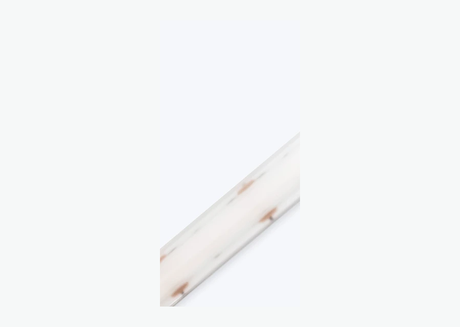

Especificar por temperatura
COB 3000K para ambientes aconchegantes e 4000K para áreas funcionais.
Explorar
Coleção SEO • Prioridade Alta
A fita LED COB entrega uma linha de luz mais uniforme, com menor percepção de pontos, ideal para sancas, perfis de alumínio, marcenaria, vitrines e projetos arquitetônicos. Escolha por temperatura de cor, tensão, potência, proteção IP e tipo de controle.
Mapa técnico
Estrutura adaptada para SEO B2B em português do Brasil, com navegação por produto, aplicação, especificação técnica e acessórios do sistema.
COB 3000K para ambientes aconchegantes e 4000K para áreas funcionais.
ExplorarCOB branca, COB RGB e versões dimerizáveis para diferentes cenas.
ExplorarSancas, perfis de alumínio, marcenaria, vitrines e móveis.
ExplorarPerfil, fonte 24V, conector COB, dimmer e controle.
ExplorarProdutos e filtros
Palavra-chave principal: fita led cob. Secundárias: fitas led cob, fita de led cob, fita led cob 3000k, fita led cob 4000k, fita led cob rgb.

Luz quente e contínua para sancas, cabeceiras e hotéis.

Luz neutra para cozinhas, vitrines e áreas de trabalho.

Linha contínua com cenas coloridas para projetos decorativos.
Guia de especificação
A fita LED COB é indicada quando o projeto pede iluminação linear limpa, uniforme e com menos pontos aparentes. Como os chips ficam muito próximos, ela funciona especialmente bem em perfis de alumínio com difusor, sancas de gesso, móveis planejados e vitrines. Em ambientes residenciais, 2700K ou 3000K trazem uma sensação mais acolhedora. Em cozinhas, lojas e áreas de trabalho, 4000K costuma equilibrar conforto e visibilidade. Antes de especificar, verifique tensão, potência por metro, comprimento máximo, proteção IP e tipo de controle. Para trechos longos, planeje a alimentação para evitar queda de brilho.
Aplicações
As páginas de aplicação devem receber links internos desta coleção para capturar tráfego de cauda longa e orientar o comprador por ambiente.
Luz indireta contínua para acabamento premium.
Planejar aplicaçãoLinhas limpas em armários, nichos, prateleiras e painéis.
Planejar aplicaçãoIluminação uniforme para destacar produtos sem pontos visíveis.
Planejar aplicaçãoFAQ técnico
Respostas curtas ajudam o usuário a decidir e também estruturam conteúdo para rich results quando a plataforma permitir FAQPage schema.
É uma fita com chips LED muito próximos, criando uma linha de luz mais contínua e com menos pontos visíveis.
Geralmente sim, quando o objetivo é iluminação indireta uniforme e acabamento mais premium.
Ela pode aquecer, por isso o perfil de alumínio é recomendado para dissipação térmica.
3000K é mais aconchegante; 4000K é mais neutra e indicada para áreas funcionais ou comerciais.
Cotação B2B
Envie comprimento, tensão, temperatura de cor, ambiente de uso e prazo. Nossa equipe ajuda a combinar produto, fonte, perfil, conector e controle corretos.